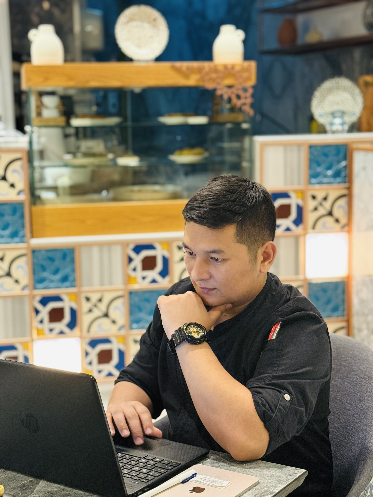
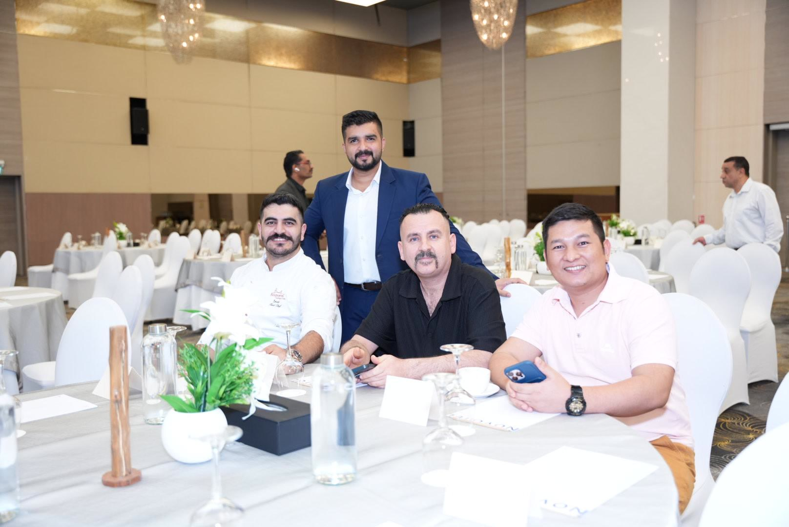
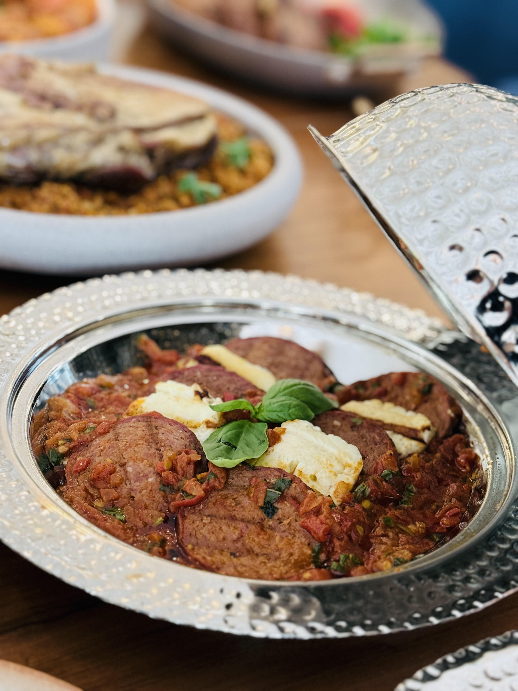
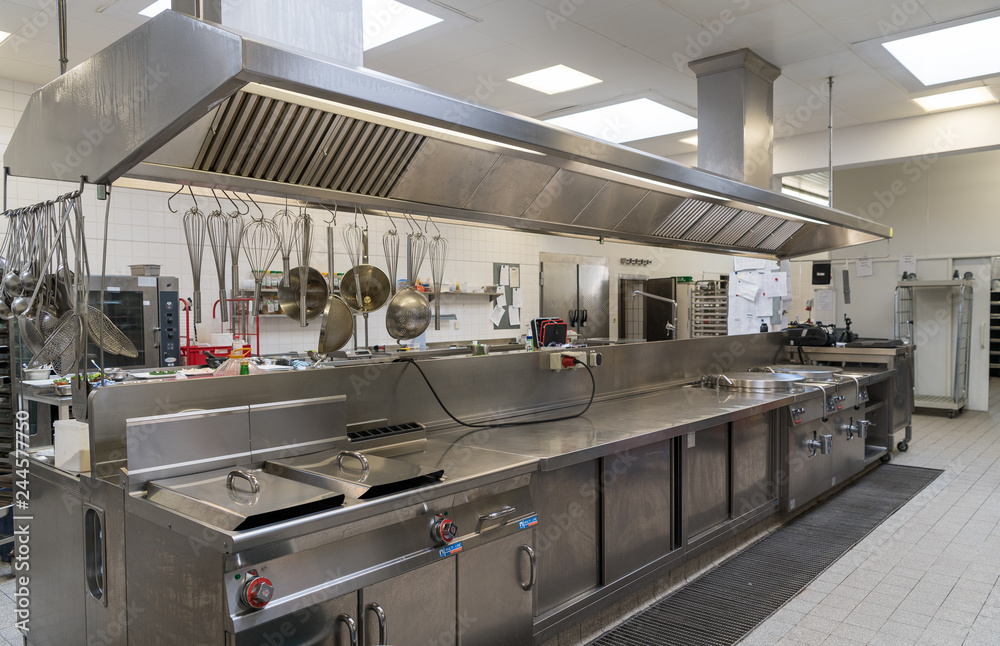
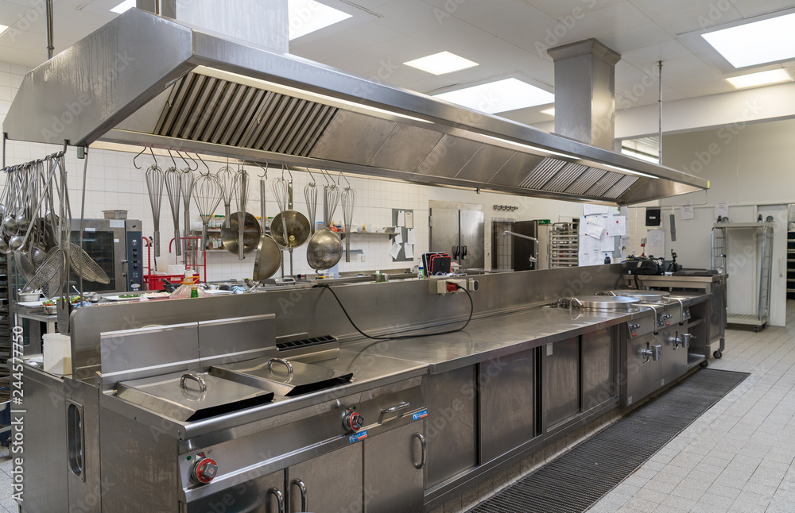
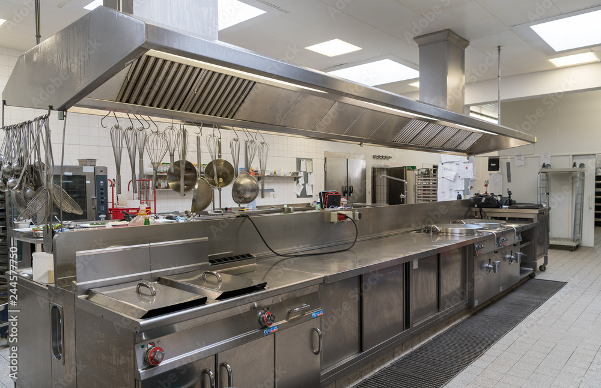
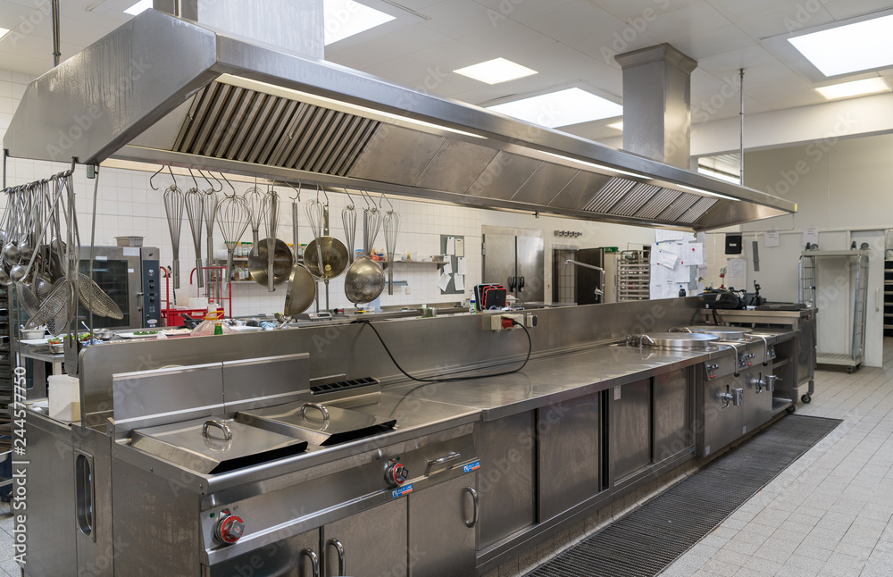

Chef Gallery



 




Head Chef • Steak Specialist • Turkish & Arabic Fusion Cuisine
I am an experienced Head Chef with more than 14 years of culinary expertise specializing in premium steaks, Turkish cuisine, and modern Arabic fusion gastronomy.
My leadership is built on discipline, consistency, innovation, and creating strong culinary teams that deliver excellence every day.
To elevate global fusion cuisine through technique, creativity, and leadership.
• Deliver premium quality & consistency
• Maintain HACCP excellence & kitchen safety
• Lead, mentor & develop strong culinary teams
• Create memorable guest dining experiences
• Innovate modern fusion & charcoal grill concepts
My philosophy is grounded in discipline, respect, innovation, and consistency. A great kitchen blends technique, passion, and teamwork to create extraordinary food.
“Quality, Safety, and Discipline — the foundation of my kitchen.”
Global Catering Services LLC – Head Chef (2018 – Present)
Armed Forces Officers Club & Hotel – Senior CDP (2015 – 2017)
Global Catering Services Abu Dhabi – DCDP (2014 – 2015)
Saujana Hotel, Malaysia – Commis 1
